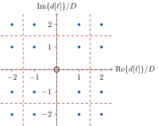

Chapter 6 Digital Modulation and Detection Methods
6.1 Linear Modulation Schemes
Contrary to the baseband modulation schemes discussed in Chapter 3, we allow in this chapter that one symbol can carry \(b\in\mathbb{N}\) bits instead of only one and that we consider passband communications where two baseband signals, viz., \(s_\mathrm{I}(t)\) and \(s_\mathrm{Q}(t)\), can be transmitted simultaneously (cf. Chapter 5). Figure 6.1 shows the block diagram of linear modulation in such a case.
Figure 6.1: Block diagram of linear modulation
The coded45 bit stream \(u[k]\), \(k\in\mathbb{Z}\), is firstly processed by a serial-to-parallel converter whose output consists of the \(b\) bits \(u[b\ell]\), \(u[b\ell+1]\), \(u[b\ell+2]\), \(\dots\), \(u[b\ell + b-1]\), \(\ell\in\mathbb{Z}\), which are used to choose the complex valued symbol \[\frac{d[\ell]}{\sqrt{\mathrm{W}}}=\frac{d_\text{I}[\ell]}{\sqrt{\mathrm{W}}}+j\frac{d_\text{Q}[\ell]}{\sqrt{\mathrm{W}}}\in\mathbb{C},\quad \frac{d_\text{I/Q}[\ell]}{\sqrt{\mathrm{W}}}\in\mathbb{R},\] from a finite set \(\cal M\) of possible symbols whose cardinality is \(M=|{\cal M}|=2^b\).46 This process is also denoted as symbol mapping. Here, each symbol \(d[\ell]\in{\cal M}\) corresponds to one specific bit sequence of length \(b\). Examples of different symbol mapping schemes are shown in the remainder of this section.
Next, the real and imaginary part, i.e., \(d_\mathrm{I}[\ell]\) and \(d_\mathrm{Q}[\ell]\), respectively, of the complex-valued symbol \(d[\ell]\) are processed like the real-valued symbol in Section 3.1 (cf. Figure 3.2). We obtain the equivalent baseband signal \[\begin{aligned} s_\text{EB}(t)&=s_\text{I}(t)+j s_\text{Q}(t)\\ &= \left(T\sum_{\ell=-\infty}^\infty d[\ell]\delta(t-\ell T)\right)*p(t)\\ &= T\sum_{\ell=-\infty}^\infty d[\ell]g(t-\ell T)\\ &=T\sum_{\ell=-\infty}^\infty d_\text{I}[\ell]p(t-\ell T)+jT\sum_{\ell=-\infty}^\infty d_\text{Q}[\ell]p(t-\ell T). \end{aligned}\] The real and imaginary part of the equivalent baseband signal \(s_\text{EB}(t)\), i.e., the inphase component \(s_\text{I}(t)\) and the quadrature component \(s_\text{Q}(t)\), respectively, are the outputs of the linear modulator in Figure 6.1 and are then processed by a QAM block as described in Section 5.2 (cf. Figure 5.2). The result is the real-valued passband signal (cf. also Theorem 5.1) \[\begin{aligned} s(t)&=\mathrm{Re}\left\{s_\text{EB}(t)e^{j2\pi f_0 t}\right\}\\ &=s_\text{I}(t)\cos(2\pi f_0 t)- s_\text{Q}(t)\sin(2\pi f_0 t)\\ &=\left(T\sum_{\ell=-\infty}^\infty d_\text{I}[\ell]p(t-\ell T)\right)\cos(2\pi f_0 t)\\ &\phantom{=\ }-\left(T\sum_{\ell=-\infty}^\infty d_\text{Q}[\ell]p(t-\ell T)\right)\sin(2\pi f_0 t). \end{aligned}\]
Before we present different linear modulation schemes in the remainder of this section, we discuss the energy \(E\) of passband signals. In case of energy-limited signals (cf. Subsection 2.1.1), it holds \[\begin{aligned} E&=\int\limits_{-\infty}^\infty s^2(t)dt=\int\limits_{-\infty}^\infty|\mathrm{Re}\left\{s_\text{EB}(t)e^{j2\pi f_0 t}\right\}|^2 dt\\ &=\int\limits_{-\infty}^\infty \left| \frac{1}{2}\left(s_\text{EB}(t)e^{j2\pi f_0t}+s^*_\text{EB}(t)e^{-j2\pi f_0t}\right)\right|^2 dt\\ &= \dots = \frac{1}{2}\int\limits_{-\infty}^\infty |s_\text{EB}(t)|^2dt \phantom{=}+\underbrace{\frac{1}{2}\int\limits_{-\infty}^\infty |s_\text{EB}(t)|^2e^{j2\pi f_0t}dt}_{\approx 0,\ \text{if narrow band signal}}. \end{aligned}\] If \(s_\mathrm{EB}(t)\) is assumed to be a narrow band signal, i.e., it is slowly time-varying and approximately constant during one period \(1/f_0\) of the carrier signal, the energy of a passband signal approximates as \[\begin{equation} E\approx\frac{1}{2}\int\limits_{-\infty}^\infty |s_\text{EB}(t)|^2dt. \tag{6.1} \end{equation}\] In other words, the energy of a passband signal is approximately half of the energy of the equivalent baseband signal.
For the computation of the BEP, we are more interested in the symbol energy \(E_s\) of linearly modulated passband signals. To obtain \(E_s\), we consider only one summand in \[s_\text{EB}(t)=T\sum_{\ell=-\infty}^\infty d[\ell] p(t-\ell T),\] e.g., the one for \(\ell=0\). Replacing \(s_\mathrm{EB}(t)\) in Equation (6.1) by \(Td[\ell]p(t)\) and applying again the normalisation of the pulse shaping filter according to Equation (3.3) yields \[\begin{aligned} E_s &\approx \frac{1}{2}\int\limits_{-\infty}^\infty |Td[\ell]p(t)|^2 dt\\ &=\frac{T^2}{2}|d[\ell]|^2\underbrace{\int\limits_{-\infty}^\infty |p(t)|^2 dt}_{=\frac{1}{T}}\\ &=\frac{T}{2}|d[\ell]|^2. \end{aligned}\] Theorem 6.1 summarizes the symbol energy and transmit signal power of linearly modulated passband communications.
6.1.1 Amplitude Shift Keying (ASK)
In case of Amplitude Shift Keying (ASK, German: Amplitudenumtastung), the amplitude of the carrier signal is weighted depending on the transmitted bit sequence. Thus, the equivalent baseband signal is real-valued, i.e., there is only an inphase component and \(d_\mathrm{Q}[\ell]=s_\mathrm{Q}(t)=0\). Consequently, an ASK transceiver (transmitter and receiver) needs only one inphase branch and its complexity is reduced compared to a general QAM transceiver.
6.1.1.1 On-Off-Keying (OOK)
On-Off Keying (OOK, German: Ein-Aus-Umtastung) is the simpliest form of ASK where one symbol carries only \(b=1\) bit, i.e., \(k=\ell\). In case of OOK, the carrier is switched on if the bit “1” is transmitted and switched off otherwise. Therefore, the equivalent baseband signal of OOK is equal to a baseband signal with unipolar symbol mapping, i.e., \[d[\ell]=\begin{cases} D, & u[\ell]=1, \\ 0, & u[\ell]=0. \end{cases}\] Figure 6.2 depicts the set \(\cal M\) of OOK symbols \(d[\ell]\) in the complex plane.
Figure 6.2: Symbol mapping of OOK
The mean symbol energy \(\bar{E}_s\) of OOK assuming equally distributed symbols, i.e., \(P(d[\ell]=0)=P(d[\ell]=D)=\frac{1}{2}\) reads as (cf. Theorem 6.1)
\[\bar{E}_s=\bar{E}_b=\frac{T}{2}\left(0^2\cdot\frac{1}{2}+D^2\cdot\frac{1}{2}\right)=\frac{D^2T}{4}.\]
Figure 6.3: Example of an OOK signal with rectangular pulse shaping and a carrier frequency of \(f_0=2/T\)
OOK has the following disadvantages:
- there is a 3-dB-shift in the BEP when compared to BPSK (see Subsection 6.1.2.2) which transmits the same number of bits per symbol and
- in case of rectangular pulse shaping, the spectrum of OOK is not suitable for wireless communications.
A typical use case of OOK is optical communications as used in, e.g., fibre optical systems.
6.1.1.2 M-ary ASK (M-ASK)
M-ary ASK (M-ASK) allows more than two amplitude levels, thus, more than one bit per symbol can be transmitted. Assuming \(b=\mathrm{ld} M\) bits per symbol, we choose the symbols of M-ASK as \[d[\ell]\in{\cal M},\ {\cal M}=\left\{(m-1)D\,|\,m\in\left\{1,\dots,M\right\}\right\}.\]
Figure 6.4: Symbol mapping of 4-ASK
Assuming equally distributed symbols, i.e., \[P(d[\ell]=d)=\frac{1}{M},\ d\in{\cal M},\] results in the mean power \[\begin{aligned} \mathrm{E}\left[|d[\ell]|^2\right]&=\sum_{d\in{\cal M}}|d|^2P(d[\ell]=d)\\ &=\frac{1}{M}\sum_{m=1}^{M} (1-m)^2D^2\\ &=\dots=\frac{1}{6} D^2 \left(2 M^2 - 3 M + 1\right), \end{aligned}\] and the mean symbol energy of M-ASK computes as (cf. Theorem 6.1)
\[\begin{aligned} \bar{E}_s&=\frac{T}{2}\underbrace{\frac{D^2 \left(2 M^2 - 3 M + 1\right)}{6}}_{=\mathrm{E}\left[|d[\ell]|^2\right]}\\ &=\frac{D^2 \left(2 M^2 - 3 M + 1\right)T}{12},\end{aligned}\] and the mean bit energy as \[\bar{E}_b=\frac{D^2 \left(2 M^2 - 3 M + 1\right)T}{12\mathrm{ld}M}.\]
Figure 6.5: Example of an 4-ASK signal with rectangular pulse shaping and a carrier frequency of \(f_0=2/T\)
6.1.2 Phase Shift Keying (PSK)
Next, we consider Phase Shift Keying (PSK, German: Phasenumtastung). Contrary to ASK, PSK signals have a constant amplitude but the phase of the carrier signal is altered depending on the transmitted bit sequence.
6.1.2.1 M-ary PSK (M-PSK)
In case of M-ary PSK (M-PSK), the \(b\) bits are mapped to the following \(M=2^b\) symbols \[d[\ell]\in{\cal M},\ {\cal M}=\left\{De^{j2\pi\frac{m-1}{M}}\,|\,m\in\left\{1,\dots,M\right\}\right\}.\]
Figure 6.6: Symbol mapping of 8-PSK
Here, independent of the symbol distribution, it holds that \[\begin{aligned}\mathrm{E}\left[|d[\ell]|^2\right]&=\sum_{d\in{\cal M}}|d|^2P(d[\ell]=d)\\ &=D^2\underbrace{\sum_{d\in{\cal M}}P(d[\ell]=d)}_{=1}=D^2.\end{aligned}\] Thus, the mean symbol energy in case of M-PSK reads as (cf. Theorem 6.1) \[\bar{E}_s=\frac{T}{2}\mathrm{E}\left[|d[\ell]|^2\right]=\frac{D^2T}{2},\] and the mean bit enery of M-PSK as \[\bar{E}_b=\frac{D^2T}{2\mathrm{ld}M}.\]
Next, we consider two very famous examples of M-PSK.
6.1.2.2 Binary Phase Shift Keying (BPSK)
Binary Phase Shift Keying (BPSK, German: binäre Phasenumtastung) is M-PSK with \(M=2\) symbols and \(b=1\) bit per symbol. BPSK symbol mapping reads as \[d[\ell]= \begin{cases} +D,& u[\ell]=0,\\ -D,& u[\ell]=1, \end{cases}\] and is equal to polar symbol mapping. BPSK symbol mapping is visualised in Figure 6.7.
Figure 6.7: Symbol mapping of BPSK
Figure 6.8: Example of a BPSK signal with rectangular pulse shaping and a carrier frequency of \(f_0=2/T\)
6.1.2.3 Quaternary Phase Shift Keying (QPSK)
Quaternary Phase Shift Keying (QPSK, German: quaternäre Phasenumtastung) is M-PSK with \(M=4\) symbols and \(b=2\) bits per symbol. QPSK symbol mapping reads as \[d[\ell]= \begin{cases} D, & u[2\ell]=0\wedge u[2\ell+1]=0, \\ Dj, & u[2\ell]=0 \wedge u[2\ell+1]=1,\\ -D, & u[2\ell]=1 \wedge u[2\ell+1]=1,\\ -Dj, & u[2\ell]=1\wedge u[2\ell+1]=0, \end{cases}\] assuming the so-called Gray coding where the nearest symbols differ only in one bit. QPSK symbol mapping with Gray coding is visualised in Figure 6.9.
Figure 6.9: Symbol mapping of QPSK
Figure 6.10: Example of a QPSK signal with rectangular pulse shaping and a carrier frequency of \(f_0=2/T\)
6.1.3 Quadrature Amplitude Modulation (QAM)
Finally, Quadrature Amplitude Modulation (QAM, German: Quadraturamplitudenmodulation) combines M-ASK and M-PSK such that the set of complex-valued symbols \(d[\ell]\) reads as \[{\cal M}=\left\{\pm(2m-1)\pm j (2n-1)\left|m,n\in\left\{1,2,\dots,\frac{\sqrt{M}}{2}\right\}\right.\right\}.\] Note that 4-QAM equals QPSK.
Figure 6.11: Symbol mapping of 16-QAM
Assuming equally distributed symbols, i.e., \[P(d[\ell]=d)=\frac{1}{M},\ d\in{\cal M},\] results in the mean power \[\begin{aligned} \mathrm{E}\left[|d[\ell]|^2\right]&=\sum_{d\in{\cal M}}|d|^2P(d[\ell]=d)\\ &=\frac{D^2}{M}\sum_{m=1}^{\frac{\sqrt{M}}{2}}\sum_{n=1}^{\frac{\sqrt{M}}{2}} \left( (2m-1)^2+(2n-1)^2\right)\\ &=\dots=\frac{D^2(M-1)}{6}, \end{aligned}\] and the mean symbol energy of QAM computes as (cf. Theorem 6.1) \[\bar{E}_s=\frac{D^2T(M-1)}{12},\] and the mean bit energy as \[\bar{E}_b=\frac{D^2T (M-1)}{12\mathrm{ld}M}.\]
The given symbol mapping is depicted in Figure 6.12.
Figure 6.12: Symbol mapping of the special 4-QAM
Table 6.1 summarises the transmitted bit sequence \(u[k]\) as well as the resulting symbols \(d[\ell]=d_\mathrm{I}[\ell]+jd_\mathrm{Q}[\ell]\).
| \(k\) | \(0\) | \(1\) | \(2\) | \(3\) | \(4\) | \(5\) | \(6\) | \(7\) |
|---|---|---|---|---|---|---|---|---|
| \(u[k]\) | \(0\) | \(0\) | \(0\) | \(1\) | \(1\) | \(0\) | \(1\) | \(1\) |
| \(\ell\) | \(0\) | \(1\) | \(2\) | \(3\) | ||||
| \(\frac{d_\mathrm{I}[\ell]}{\sqrt{\mathrm{W}}}\) | \(0\) | \(1\) | \(0\) | \(1\) | ||||
| \(\frac{d_\mathrm{Q}[\ell]}{\sqrt{\mathrm{W}}}\) | \(0\) | \(0\) | \(1\) | \(1\) | ||||
| \(\frac{d[\ell]}{\sqrt{\mathrm{W}}}\) | \(0\) | \(1\) | \(j\) | \(j+1\) |
With the causal rectangular pulse shaping filter as depicted in Figure 3.5, the inphase and quadrature component \(s_\mathrm{I}(t)\) and \(s_\mathrm{Q}(t)\), respectively, compute as shown in Figure 6.13.
Figure 6.13: Inphase component \(s_\mathrm{I}(t)\) and quadrature component \(s_\mathrm{Q}(t)\) of the equivalent baseband signal corresponding to the special 4-QAM example
And recalling formula \[s(t)=s_\mathrm{I}(t)\cos(2\pi f_0 t) - s_\mathrm{Q}(t)\sin(2\pi f_0 t),\] yields the passband signal \(s(t)\) as depicted in Figure 6.14.
Figure 6.14: Passband signal \(s(t)\) of the special 4-QAM example
Exercise 6.2 (16-QAM) Consider QAM with the symbols \[\begin{equation*} d[\ell]\in\{\pm 1 \pm \text{j}, \pm 2 \pm 2\text{j}, \pm 1 \pm 2\text{j}, \pm 2 \pm \text{j}\}. \end{equation*}\]
- Plot the symbols on the complex plane. How many symbols \(M\) are available and how many bits \(b\) per symbol can be transmitted?
- Add the decision lines to the plot. What is special in this case?
- Plot the block diagram of the corresponding modulator.
There are \(M=16\) symbols with \(b=\mathrm{ld} M = \mathrm{ld} 16 = 4\) bits per symbol available. The symbols are plotted in Figure 6.15.
Figure 6.15: Symbol mapping of 16-QAM
The decision lines are the red dashed lines in Figure 6.15. The distances between adjacent symbols are not the same for all symbols. For example, the distance between symbols with a sign change of the real or imaginary part is larger than the distance between symbols in the same quadrant. This symbol mapping pattern is used in hierarchical modulation schemes where in case of a very noisy channel, a QPSK transmission is still possible which can be switched to 16-QAM if the channel improves.
The block diagram is the combination of Figure 6.1 and Figure 5.2 with \(b=4\).
6.2 Binary Frequency-Shift-Keying (FSK)
In the previous section, we considered linear modulation schemes which alter the amplitude or the phase of the carrier signal depending on the transmitted bits. In this section, we deal with a nonlinear modulation scheme, the so-called Frequency Shift Keying (FSK, German: Frequenzumtastung) where the frequency of the carrier signal is altered depending on the transmitted bits.
In binary FSK, there are two carrier signals of the same amplitude but with two different carrier frequencies \(f_1\) and \(f_2> f_1\). This can be realised by, e.g., one LO whose frequency \(f_0\) is changed by \(\pm \Delta f\), i.e., \(f_1=f_0-\Delta f\) and \(f_2=f_0+\Delta f\). These changes are triggered by the bit sequence \(u[k]=u[\ell]\in\{0,1\}\) in such a way that \(f_1\) is used if \(u[\ell]=0\) and \(f_2\) if \(u[\ell]=1\). If we use again the QAM block in Figure 5.2, binary FSK in the time interval \(t\in[\ell T,(\ell+1) T]\) can be represented by the equivalent baseband signal \[s_\text{EB}(t)=De^{j2\pi\Delta f(t-\ell T)(2u[\ell]-1)+j\varphi_0(\ell T)},\] where
- \(\varphi_0(\ell T)\) is the phase at the beginning of the specific symbol interval (it can be chosen such that the phase is continuous, Continuous Phase Frequency Shift Keying, CPFSK) and
- \(\Delta f\) is the one-sided frequency shift (frequency shift \(2\Delta f\), German: Frequenzhub).
With the equivalent baseband signal \(s_\text{EB}(t)\) of binary FSK as defined above, the passband signal \(s(t)\) of binary FSK in the time interval \(t\in[\ell T,(\ell+1) T]\) computes to \[\begin{align} s(t)&=\mathrm{Re}\left\{s_\text{EB}(t)e^{j2\pi f_0 t}\right\}\\ &=\mathrm{Re}\left\{De^{j2\pi\Delta f(t-\ell T)(2u[\ell]-1)+j\varphi_0(\ell T)}e^{j2\pi f_0 t}\right\}\\ &=\mathrm{Re}\left\{De^{j2\pi f_0 t+j2\pi\Delta f(t-\ell T)(2u[\ell]-1)+j\varphi_0(\ell T)}\right\}\\ &=D\cos(2\pi f_0 t+\underbrace{2\pi\Delta f(t-\ell T)(2u[\ell]-1))+\varphi_0(\ell T)}_{=:\varphi(t)}). \tag{6.2} \end{align}\]
Special choices of the modulation index \(h\) lead to different types of binary FSK:
- \(h=n0.5\) with \(n\in\mathbb{N}\): orthogonal FSK, i.e., the correlation between \(s_\text{EB}(t)|_{u[\ell]=0}\) and \(s_\text{EB}(t)|_{u[\ell]=1}\) is zero,
- \(h=0.72\): FSK with smallest cross-correlation (see, e.g., Proakis (2000)) but higher bandwidth compared to MSK and
- \(h=0.5\): orthogonal FSK with the smallest relative frequency shift (Mininum Shift Keying, MSK).
Let us now have a closer look at the phase \(\varphi(t)\) of binary FSK as defined in Equation (6.2). It holds \[\begin{aligned} \varphi(t)&=2\pi\Delta f (t-\ell T)(2u[\ell]-1)+\varphi_0(\ell T)\\ &=\pi h \left( \frac{t}{T}-\ell\right)(2u[\ell]-1)+\varphi_0(\ell T). \end{aligned}\] The two different frequency states of the carrier, viz. \(f_1\) and \(f_2\), result in a linearly de- or increasing \(\varphi(t)\). Note that this phase adds up to the phase \(2\pi f_0t\) of the carrier signal, i.e., finally, the total phase of the carrier is linearly increasing in any case but its slope is smaller if \(u[\ell]=0\) and larger if \(u[\ell]=1\) has been transmitted.
Figure 6.16: Phase diagram of CPFSK for \(\varphi_0(0)=0\)
Figure 6.17: Phase \(\varphi(t)\) of MSK and GMSK signal corresponding to the bit sequence \(u[\ell]\)
Figure 6.18: Passband signal \(s(t)\) and the corresponding PSD estimate \(\hat{\Phi}_s(f)\) of MSK and GMSK
Besides binary FSK, there exists also FSK schemes where the transmitter switches between more than two frequencies. If we assume \(M\) such frequencies, the resulting modulation scheme is called Multiple Frequency Shift Keying (MFSK) or M-ary FSK or M-FSK. Similar to M-ASK or M-PSK, one M-FSK symbol carries \(b=\mathrm{ld}M\) bits. M-FSK is not discussed any further in this textbook. If you are interested in more details, we refer to, e.g, Proakis (2000).
6.3 Coherent Detection of Linear Modulation Schemes
Coherent detection (German: kohärente Detektion) refers to a phase synchronous detection, i.e., the phase of the receiver’s LO must be the same than the phase of the transmitter’s LO (see Section 5.4). This type of detection is necessary when using QAM. Figure 6.19 shows QAD similar to Figure 5.3 but where the input signal is no longer the transmit signal \(s(t)\) but the received signal \(r(t)=s(t)+n(t)\) which is perturbed by Gaussian noise. Thus, the outputs of QAD are estimates of the inphase and quadrature component, in the following denoted as \(\hat{s}_\mathrm{I}(t)\) and \(\hat{s}_\mathrm{Q}(t)\), respectively.
Figure 6.19: Block diagram of QAD
These outputs are then further processed by the receiver structure as depicted in Figure 6.20 (cf. also Figure 4.4).
Figure 6.20: Block diagram of a passband receiver
The decision block in Figure 6.20 is more sophisticated than the one in Figure 4.4 in case of baseband communications which simply applies a signum function. The decision block chooses the complex-valued output \(\tilde{d}[\ell]=\tilde{d}_\mathrm{I}[\ell]+j\tilde{d}_\mathrm{Q}[\ell]\) as the element of the set \(\cal M\) of possible symbols which is nearest to the received sampled value \(y[\ell]=y_\mathrm{I}[\ell]+jy_\mathrm{Q}[\ell]\) in the complex plane. Here, the term “nearest” refers to the smallest Euclidean distance, i.e., \[\DeclareMathOperator*{\argmin}{argmin}\tilde{d}[\ell]=\argmin_{d\in{\cal M}} |y[\ell]-d|.\] In case of BPSK, the decision operation simplifies to the signum function.
Symbol demapping is the inverse function of symbol mapping, i.e., finding the bit sequence of \(b\) bits, i.e., \(\tilde{u}[b\ell]\), \(\tilde{u}[b\ell+1]\), \(\dots\), \(\tilde{u}[b\ell+b-2]\) and \(\tilde{u}[b\ell+b-1]\), which corresponds to the detected complex-valued symbol \(\tilde{d}[\ell]=\tilde{d}_\mathrm{I}[\ell]+j\tilde{d}_\mathrm{Q}[\ell]\).
Finally, the parallel-to-serial converter restructures the resulting bits to the bit stream \(\tilde{u}[k]\) which is the same as the transmitted bit sequence \(u[k]\) if no bit errors occured.
6.3.1 BEPs
6.3.1.1 BEP of Coherent BPSK Detection
If a BPSK passband signal is detected coherently, the receiver branch with the quadrature component in Figures 6.19 and 6.20 can be omitted and it holds that \(\bar{E}_s=\bar{E}_b\). With the derivation in, e.g., Roppel (2018), we get finally the same BEP as in the case of baseband communications with polar symbol mapping (cf. Theorem 4.3), i.e. \[P_\mathrm{BE}=\frac{1}{2}\mathrm{erfc}\left(\sqrt{\frac{\bar{E}_s}{N_0}}\right)= \frac{1}{2}\mathrm{erfc}\left(\sqrt{\frac{\bar{E}_b}{N_0}}\right).\] See Figure 6.26 for a visualisation of the BPSK’s BEP.
6.3.1.2 BEP of Coherent QPSK Detection with Gray Coding
If a QPSK passband signal with Gray coding is detected coherently, both receiver branchs in Figures 6.19 and 6.20, i.e., the one of the inphase as well as the one of the quadrature component are needed. It holds that \(\bar{E}_s=2\bar{E}_b\). With the derivation in, e.g., Roppel (2018), we get finally the BEP \[P_\mathrm{BE}=\frac{1}{2}\mathrm{erfc}\left(\sqrt{\frac{\bar{E}_s}{2N_0}}\right)= \frac{1}{2}\mathrm{erfc}\left(\sqrt{\frac{\bar{E}_b}{N_0}}\right).\] See Figure 6.26 for a visualisation of the QPSK’s BEP.
6.3.1.3 BEP of Coherent QAM Detection
In case of coherent QAM detection, \(\bar{E}_s=\mathrm{ld}M\bar{E}_b\) and it holds for \(M\geq 4\) that \[\begin{aligned} P_\mathrm{BE}&\approx\frac{2}{\mathrm{ld}M}\left(1-\frac{1}{\sqrt{M}}\right) \mathrm{erfc}\left(\sqrt{\frac{3\bar{E}_s}{2(M-1)N_0}}\right)\\ &=\frac{2}{\mathrm{ld}M}\left(1-\frac{1}{\sqrt{M}}\right) \mathrm{erfc}\left(\sqrt{\frac{3\mathrm{ld}M\bar{E}_b}{2(M-1)N_0}}\right). \end{aligned}\] Again, a derivation can be found in, e.g., Roppel (2018) and the BEP curves of 16- and 64-QAM are depicted in Figure 6.26.
Exercise 6.3 (Satellite Communications System) Consider a satellite system with a transponder bandwidth of 70 MHz and a maximum bit rate of 90 Mbit/s. The system uses QPSK modulation and root-raised-cosine pulse shaping.
- What is the symbol rate \(1/T\) of the transmission?
- What is the maximum possible roll-off factor \(\alpha\)?
- What is the spectral efficiency \(\eta\)?
- Compute the BEP \(P_\text{BE}\) at \(10\lg(\bar{E}_b/N_0)=6\,\mathrm{dB}\).
- Now, we use BPSK instead of QPSK. How much do we need to increase the transmit power \(P_s\) in order to achieve the same BEP?
QPSK: \(2\,\mathrm{bit}\) per symbol
\(\Rightarrow \frac{1}{T} = 45\,\frac{\text{Msymbol}}{\text{s}}\)\(T = \frac{1\,\mathrm{s}}{45\cdot 10^6} = 22.2\,\mathrm{ns}\)
\(\Rightarrow B=2(1+\alpha)\frac{1}{2T} = (1+\alpha)\frac{1}{T}\)
\(\Rightarrow \alpha = BT-1 = 70\,\mathrm{MHz}\cdot 22.2\,\mathrm{ns} - 1 = 0.56\)\(\eta = \frac{R}{B} = \frac{90\,\frac{\text{Mbit}}{\text{s}}}{70\,\mathrm{MHz}} = 1.29\,\frac{\text{bit}}{\text{s} \cdot \text{Hz}}\)
\(\frac{\bar{E}_b}{N_0} = 10^{0.6} = 3.98\)
\(\Rightarrow P_\mathrm{BE} = \frac{1}{2}\mathrm{erfc}\left(\sqrt{\frac{\bar{E}_b}{N_0}}\right) = \frac{1}{2}\mathrm{erfc}\left(\sqrt{3.98}\right) = 2.4\cdot 10^{-3}\)It holds for QPSK that \(P_s=\bar{E}_s/T=\bar{E}_b/(bT)=\bar{E}_b/(2T)\) and for BPSK that \(P_s=\bar{E}_s/T=\bar{E}_b/T\). Thus, the transmit power has to be increased by 3 dB to achieve exactly the same bit error probability.
6.3.2 Frame Error Rate and Mean Data Rate
Recall the concept of frames which we have introduced in Subsection 4.5.2. Let us further define the frame size \(N\) as the number of bits per packet. Remember that \(N_s\) denotes the number of symbols per packet. Thus, \(N=bN_s=N_s\mathrm{ld}M\). A frame is erroneous if it contains at least one bit error. With the BEP \(P_\mathrm{BE}\), the probability that one frame has no errors is \((1-P_\mathrm{BE})^N\). Thus, the Frame Error Probability (FEP, German: Paketfehlerwahrscheinlichkeit) is \[P_\mathrm{FE}=1-(1-P_\mathrm{BE})^N.\] If the FEP is approximated by the number of erroneously received frames divided by the total number of transmitted frames, it is called Frame Error Rate (FER, German: Paketfehlerrate oder Blockfehlerrate).
Next, we investigate the mean data rate \(R\) (German: mittlere Datenrate) which is equal to the mean number of correctly transmitted bits per channel use. Here, one channel use corresponds to the transmission of one symbol, i.e., one frame contains \(N_s\) channel uses. If we assume that erroneous packets are completely lost and not retransmitted, the mean data rate computes as \[R=\frac{N (1-P_\mathrm{FE})}{N_s}=b(1-P_\mathrm{BE})^N=\mathrm{ld}M (1-P_\mathrm{BE})^N.\]
Figure 6.21: Mean data rate \(R\) over \(10\lg(\bar{E}_s/N_0)\) for BPSK, QPSK, 16-QAM and 64-QAM
| Channel Quality \(10\lg(\bar{E}_s/N_0)\) | Modulation Scheme |
|---|---|
| < 8.6 dB | BPSK |
| > 8.6 dB, \(\leq\) 14.4 dB | QPSK |
| > 14.4 dB, \(\leq\) 21 dB | 16-QAM |
| > 21 dB | 64-QAM |
6.4 Noncoherent Detection of ASK and FSK
Contrary to coherent detection in Section 6.3, noncoherent detection (German: nichtkohärente Detektion) does not require a LO whose phase is synchronous to the phase of the transmitter’s LO. In fact, some noncoherent detectors do not need a LO at all. The key component in most of the noncoherent detectors is the so-called envelope detector as described in the next subsection.
6.4.1 Envelope Detection
The Envelope Detector (ED, German: Hüllkurvendetektor) detects the hull or envelope of a signal. If we consider, e.g., an AM signal which we have briefly mentioned at the end of Section 5.1, the information is transported by the amplitude of the carrier signal. By applying an ED, exactly this information can be recovered because the ED outputs the time-varying amplitude of the carrier.
There are two popular implementations of an ED:
A diode detector (German: Diodendetektor) uses a diode to firstly rectify (German: gleichrichten) the modulated carrier signal. Then, a low-pass filter, e.g., a RC-circuit, is applied to remove the carrier signal whose frequency is much higher than the time-varying amplitude. The time-varying amplitude signal remains at the output.
The precision detector (German: Präzisionsdetektor) is a diode detector where the diode rectifier is replaced by a so-called precision rectifier. A precision rectifier is a circuit with an operational amplifier realizing an ideal diode, thus, avoiding the drawbacks of a diode rectifier, i.e., e.g., the voltage drop at the diode.
6.4.2 Noncoherent ASK Detector
Here, we consider the noncoherent detection of an ASK signal (cf. Subsection 6.1.1). Figure 6.22 depicts the block diagram of the corresponding detector where symbol demapping and parallel-to-serial conversion of the detected bits is omitted.
Figure 6.22: Block diagram of a noncoherent ASK detector
A Band-Pass (BP) filter with the center frequency \(f_0\) and the one-sided bandwidth \(B\) at the input of the detector extracts the frequency band of the transmitted signal and removes all other frequencies in the received signal \(r(t)\) which belong to either interference or co-existing communications systems. Then, the ED (see Subsection 6.4.1) recovers the estimate \(\hat{s}_\mathrm{EB}(t)\) of the baseband signal and finally, the baseband receiver (rx) as shown in Figure 4.4 determines the estimate \(\tilde{d}[\ell]\) of the transmitted symbol.
Similar to Figure 6.20, these symbols are then processed by a symbol demapper and a parallel-to-serial conversion to obtain finally the detected bit sequence \(\tilde{u}[k]\).
Figure 6.23: Noncoherent detection of an 4-ASK signal with rectangular pulse shaping and a carrier frequency of \(f_0=2/T\)
6.4.3 Noncoherent FSK Detector
Figure 6.24 depicts a noncoherent detector for binary FSK as introduced in Section 6.2.
Figure 6.24: Block diagram of a noncoherent binary FSK detector
Two bandpass filters with the center frequencies \(f_1=f_0-\Delta f\) and \(f_2=f_0+\Delta f\), respectively, and the bandwidth smaller than the frequency shift \(2\Delta f\) extract the carrier signal with the frequency \(f_1\) and the one with the frequency \(f_2\) from the received signal \(r(t)\), resulting in the signals \(r_1(t)\) and \(r_2(t)\), respectively. The signal \(r_1(t)\) is a noisy carrier signal with frequency \(f_1\) if \(u[\ell]=0\) has been transmitted, otherwise it is just filtered noise. The signal \(r_2(t)\) is a noisy carrier signal with frequency \(f_2\) if \(u[\ell]=1\) has been transmitted, otherwise it is just filtered noise. The ED determines the amplitudes \(\hat{s}_{\mathrm{EB},1}(t)\) and \(\hat{s}_{\mathrm{EB},1}(t)\) of \(r_1(t)\) and \(r_2(t)\), respectively.
Then, the difference term \(\hat{s}_\mathrm{EB}(t)=\hat{s}_{\mathrm{EB},1}(t)-\hat{s}_{\mathrm{EB},2}(t)\) represents a baseband signal with polar symbol mapping and rectangular pulse shaping which can be processed by the baseband receiver (cf. Figure 4.4) to get the estimate \(\tilde{d}[\ell]\) of the transmitted symbol.
Finally, the detected bit sequence \(\tilde{u}[k]\) is obtained by polar symbol demapping, i.e., \[\tilde{u}[k]=\tilde{u}[\ell]= \begin{cases} 0, & \tilde{d}[\ell]=D,\\ 1, & \tilde{d}[\ell]=-D. \end{cases}\]
Figure 6.25: Noncoherent detection of a binary FSK signal with the frequencies \(f_1=2/T\) and \(f_2=4/T\) (\(f_0=3/T\), \(\Delta f=1/T\)) in the noiseless case (\(n(t)=0\))
6.4.4 BEP of Noncoherent Detection
The BEP of noncoheret detection assuming orthogonal binary signals, i.e., either OOK (or 2-ASK which is the same) or binary FSK (or 2-FSK) and a AWGN channel as defined in Section 4.1 computes approximately to \[P_\mathrm{BE}\approx \frac{1}{2}e^{-\frac{\bar{E}_s}{2N_0}}.\] The derivation of this formula is omitted here but can be found in, e.g., Roppel (2018).
6.5 Comparison of Digital Modulation Schemes
Table 6.3 summarizes the BEPs of the digital modulation schemes discussed in the previous sections. The corresponding BEP curves are shown in Figure 6.26.
| Modulation Scheme | BEP \(P_\mathrm{BE}\) | Energy Relation |
|---|---|---|
| BPSK | \(\frac{1}{2}\mathrm{erfc}\left(\sqrt{\frac{\bar{E}_b}{N_0}}\right)\) | \(\bar{E}_s=\bar{E}_b\) |
| QPSK | \(\frac{1}{2}\mathrm{erfc}\left(\sqrt{\frac{\bar{E}_b}{N_0}}\right)\) | \(\bar{E}_s=2\bar{E}_b\) |
| coherent orthogonal FSK (\(h=n0.5\)) | \(\frac{1}{2}\mathrm{erfc}\left(\sqrt{\frac{\bar{E}_b}{2N_0}}\right)\) | \(\bar{E}_s=\bar{E}_b\) |
| coherent FSK (\(h=0.72\)) | \(\frac{1}{2}\mathrm{erfc}\left(\sqrt{1.22\frac{\bar{E}_b}{2N_0}}\right)\) | \(\bar{E}_s=\bar{E}_b\) |
| noncoherent orthogonal FSK | \(\frac{1}{2}e^{-\frac{\bar{E}_b}{2N_0}}\) | \(\bar{E}_s=\bar{E}_b\) |
Figure 6.26: BEP comparison of digital communications schemes
It can be seen that with respect to \(10\lg(\bar{E}_b/N_0)\) (focus on mean bit energy), BPSK and QPSK have exactly the same BEP. However, this is not true if the BEP curves are plotted over \(10\lg(\bar{E}_s/N_0)\) (focus on mean symbol energy) where there would be a 3-dB-shift between the BEP curves of BPSK and QPSK.
Comparing all linear modulation schemes, BPSK and QPSK have the smallest BEP and 64-QAM the highest. The BEP curve of 16-QAM lies in the middle. As we have seen in Figure 6.21, we cannot conclude from this fact that BPSK or QPSK is the best modulation scheme. Although the BEP is smaller, the number of bits transmitted per symbol in case of 16-QAM or 64-QAM is much higher, resulting in a higher mean data rate which is the final figure of merit.
Concerning the binary FSK schemes, FSK with the modulation index \(h=0.72\) and coherent detection results in the smallest BEP. However, its bandwidth is higher than the one of orthogonal FSK and coherent detection, e.g, MSK, i.e., orthogonal FSK with \(h=0.5\). If one needs to avoid coherent detection, e.g., due to hardware limitations, the resulting BEP of orthogonal FSK with noncoherent detection increases tremendously.
Finally, Table 6.4 compares the spectral efficiencies of the digital modulation schemes discussed in the previous sections.
| Modulation Scheme | \(10\lg(\bar{E}_b/N_0)\) at \(P_\mathrm{BE}=10^{-4}\) | Spectral Efficiency \(\eta\) in \(\frac{\text{bit}}{\text{sHz}}\) |
|---|---|---|
| coherent BPSK | 8.4 dB | 0.5 to 1.0 (Nyquist) |
| coherent QPSK | 8.4 dB | 1.0 to 2.0 (Nyquist) |
| noncoherent FSK (\(h=1\)) | 12.3 dB | less or equal than 0.8 (rectangular) |
| coherent FSK (\(h=0.72\)) | 10.5 dB | less or equal than 1.0 (rectangular) |
| MSK (\(h=0.5\)) | 11.4 dB | 1.9 |
Remember that we do not consider any coding in this course, i.e., \(u[k]=b[k]\). However, we still use a different notation for generality.↩︎
\(|{\cal M}|\) denotes the cardinality of the set \(\cal M\), i.e., the number of elements in the set.↩︎
Again, the simulation file
bpsk.grccan be used to run the code on your own GNU Radio installation.↩︎Again, the simulation file
psk.grccan be used to run the code on your own GNU Radio installation.↩︎